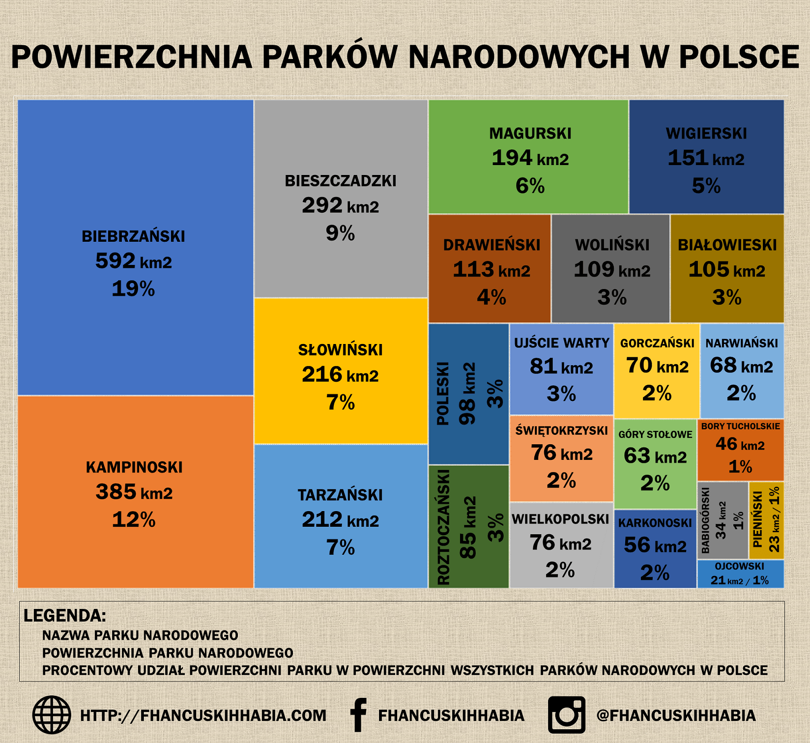

W Polsce znajdują się 23 parki narodowe. Najwięcej parków jest w województwach małopolskim oraz w podlaskim. Najwięcej parków narodowych znajduje się w górach (Tatrzański, Bieszczadzki, Gorczański, Babiogórski, Pieniński, Magurski, Bieszczadzki, Świętokrzyski, Góry Stołowe, Karkonoski). Są też parki wyżynne (Ojcowski, Roztoczański). Na terenach nadmorskich są parki Słowiński i Woliński. Są też parki chroniące puszcze i lasy (Białowieski, Kampinoski, Drawieński, Wielkopolski, Bory Tucholskie). W dolinach rzek są umiejscowione parki Biebrzański, Narwiański i Ujście Warty. Jest jeszcze okalający jezioro Wigierski PN, oraz położony ne terenach bagiennych Poleski PN.
Powierzchnia parków narodowych w Polsce
Ogółem powierzchnia parków narodowych stanowi 1% całkowitej powierzchni Polski. Największymi powierzchniowo parkami są Biebrzański, Kampinoski i Bieszczadzki, a do najmniejszych należą Ojcowski, Pieniński i Babiogórski.
Parki narodowe w Polsce: długość szlaków turystycznych

Na stronach Głównego Urzędu Statystycznego znajdują się ciekawe dane dotyczące długości szlaków turystycznych oraz liczby turystów odwiedzających poszczególne parki. O ile Biebrzański jest największym powierzchniowo parkiem narodowym, o tyle w Kampinoskim parku łączna długość szlaków turystycznych jest najdłuższa spośród wszystkich parków. Najkrótsze szlaki turystyczne oferują parki Ujście Warty, Roztoczański oraz Pieniński.
Liczba turystów odwiedzających parki narodowe w Polsce

Ogółem najwięcej turystów odwiedza – nie będzie tu niespodzianki – Tatrzański Park Narodowy. W 2016 roku było to prawie 3,7 mln osób. Ale w przeliczeniu na jednostkę powierzchni, są parki jeszcze bardziej zatłoczone. Najbardziej zatłoczonymi parkami w przeliczeniu na hektar powierzchni są Pieniński, Karkonoski i Ojcowski. Ale co najważniejsze, większość parków wcale nie jest specjalnie zatłoczona – liczba turystów nie przekracza 50 osób rocznie na jednostkowy hektar. Tak więc w tych parkach nie ma ryzyka, że ktoś nam zakłóci cieszenie się naturą,